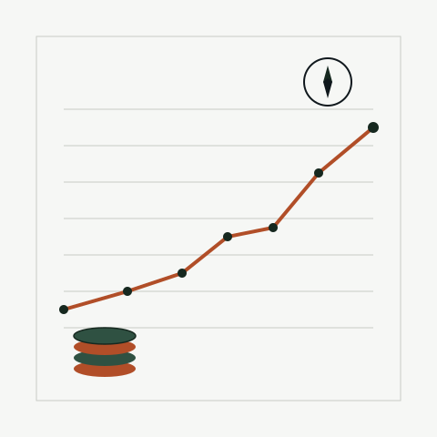

GEN X · NO INSTRUCTION MANUAL · FIGURING IT OUT ANYWAY
It's never too late to start a side quest.
I'm padding my retirement fund one gig-platform task at a time — and writing down everything I learn along the way, mistakes included.

15,000+
tasks completed
850+
hours logged
$12,000+
added to the retirement fund
What this actually is
Not a "quit your job" pitch. I still work a full-time job in mortgages. This is the story of using research and gig platforms — Prolific, Connect, Clickworker, dscout, UserTesting — as one more tool toward retirement, starting in my forties.
Where to start
The journal runs chronologically — from the first Clickworker task to discovering Prolific to whatever I'm testing this week. Start at the beginning, or jump to the latest entry.